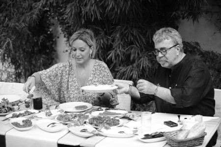

“Basit yemekle baştan çıkmam”
Yemekle aranız nasıl?
Kilomdan belli olmuyor mu? Yemekle aram çok çok iyi. Seviyorum yemek yemeyi, iştahlı biriyim. Bir de keyifli yemeyi çok seviyorum, ama kendimi tutamayıp şuursuzca yiyorum.
Yemek yemek kadar yapmasını da sever misiniz?
Yemek yapmasını pek sevmem. Yapmam için çok sevdiğim birilerini davet etmiş olmam lazım. Onun haricinde yemekle çok uğraşmam. Zaten son zamanlarda çalışma tempom yüzünden ne gelen var ne giden.
Çocukluğunuzdan aklınızda kalan yemek anıları var mı, en sevdiğiniz yemekler hangisiydi?
Çocukluğumda peksimet vardı. Sabah kalkınca peksimeti çaya batırıp beyazpeynirle yemeyi çok severdim. Daha çok simit, peksimet, peynir, domates yemeyi tercih ederdim. Her çocuk gibi ıvır zıvıra düşkündüm. Annemin patlıcanlı pilavı çok lezzetliydi. Bir de köpoğlu denilen mezeden yapardı; tabak tabak yerdim. Annem çok lezzetli ve çok hızlı yemek yapardı. Mutfağa girer, bir anda üç beş çeşit yemek yapıp çıkardı. Babam mutfağa girmezdi, o sadece yerdi. Romantik olsun diye masayı mumlarla süslerdi. Akşamları masada ya loş ışık ya da çiçek olurdu. Zeytinyağlısı, eti, pilavı, salatası olsun, şık bir sofrada otursun, öyle severdi babam. Biz “Baba mutfakta yiyelim” derdik, ama onu asla ikna edemezdik.
Çocukluğunuzdan damağınızda kalan tatlar hangisi?
Ananaslı pasta... Onca yemeğin arasında aklımda kalan tat o nedense. Annem çok güzel yapardı ananaslı pastayı.
Evde erkeğin mutfağa girmesini onaylıyor musunuz?
Erkek çok dağıtmadığı sürece mutfağa girebilir. Ben mutfağı bir taraftan dağıtırken, bir taraftan da düzeltirim. Çünkü dağınık mutfağa hiç tahammülüm yoktur. Bir erkek mutfağa girince, mutfağı fazlasıyla dağıtır. Doğru düzgün çalışan erkekler varsa, yeme de yanında yat o zaman.
“Aşk mideden geçer” derler; inanıyor musunuz buna?
Ben oradan başladığına değil de oradan devam ettiğine inanıyorum, orada iş sağlamlaşıyor. İlk önce arada bir elektriklenme oluyor, sonra aşk başlıyor. Ardından da lezzetli yemeklerle birlikte pekişiyor, daha da güçleniyor. Yani lezzetli yemek aşkı güçlendiriyor.
Lezzetli yemek yaptığınız için size âşık olan erkek oldu mu?
Hiç olmadı. Zaten o kadar lezzetli yemekler yapamam ki. Ben önce âşık ettim, sonra doyurdum.
“Misafir geldiğinde mutfağa girerim” dediniz; peki ne pişirirsiniz?
Makarna, pilav, soya soslu tavuk... Tembel tavuk diye özel bir yemeğim var, ondan ya da beşamel soslu et yaparım. İzmirli olduğum halde öyle zeytinyağlıları falan beceremem. Hamur işi olarak pişi yaparım. Size tembel tavuk tarifini vereyim: Patates cipsini bir güzel dövüp toz haline getiriyorsunuz. Sonra tavuğu sarmısaklı tereyağına bandırıyorsunuz, ardından cipse buluyorsunuz ve fırına atıyorsunuz. Tavuk çıtır çıtır oluyor. Ben bunu bir kere erkek arkadaşıma yaptım. Tavuğu yerken iki de bir bana “Senin için çiğ tavuk yerim” diyor. İltifat ettiğini sandım önce. Meğer gerçekten tavuk çiğmiş. Tavuğu buzluktan geç çıkarmışım, tam çözülmemiş, içi çiğ kalmış. Rezil olmuştum o akşam.
En sevdiğiniz yemek hangisi?
Hepsini severim. Bir sıralama yapamam, çünkü her şeyi severim; dedim ya, iştahlı bir insanım. Kısır, mantı, kebap, balık...
Hiç sevmediğiniz yemek var mı?
Kapuska. Adı da bir acayip gelir bana.
Hangi yörenin yemeği hoşunuza gider?
Ben İzmirliyim, ot ya da salata tarzı bir şey yemezsem ne yediğimi anlamıyorum. Bazıları et yemezse doymaz ya, ben de ot yemezsem doymam. Mutlaka yeşillik yemem lazım. İzmir’in rokası çok meşhurdur, ama ben rokayı İstanbul’a gelince sevdim. İzmir’de normalde önce zeytinyağlılar çıkar, sonra ana yemek gelir, en sona da meyve ya da tatlı çıkar. İstanbul’a gelince çok şaşırdım. Zeytinyağlıyı en son servis ediyorlar. Her şeyi yemişsin, midede yer kalmamış, üstüne bir de bakıyorsun masaya zeytinyağlı fasulye konmuş.
Lezzetli yemek yemek için yolculuk yaptığınız oluyor mu?
Yok. Şehir içinde lezzetli yemek yemek için her yere gidebilirim ama şehir değiştirmem. Mesela, İskender kebap yemek için Bursa’ya gitmem.
Sizin gönlünüzü çelebilmek için erkek ne pişirmeli?
Öyle bir yemekle baştan çıkmam, zor olan birkaç yemek yapması lazım. Mesela risotto, beşamel soslu et, bir de enginarlı pilav çıkarsın, tamam. Gönlümü çelebilmek için böylesine zorlu bir mutfak sınavından geçmesi lazım.
Hangi ülkenin mutfağını tercih edersiniz?
İtalyan mutfağını tabii ki. Makarna, pizza; hamur işlerini çok seviyorum. Hamur işi yediğim zaman gerçekten çok mutlu oluyorum, daha çok kahkaha atıyorum.
Peki ya Türkiye’deki hamur işleri?..
Türkiye’de o kadar hamur işi yememeye çalışıyorum. Gerçek suböreğini bulmak çok zor. Bulunca yiyorum tabii. Türkiye’de de İtalyan tarzı lezzetli pizza yapan yerlere gidip yiyorum. Fast food’u da seviyorum. Ben her şeyi seviyorum, ayrım yapmıyorum.
Asla “hayır” diyemeyeceğiniz yemek hangisi?
Mantı ve kısıra asla “hayır” diyemem. Ne kadar tok olursam olayım bunlar önüme konunca yerim.
Et mi, sebze mi, balık mı, hamur mu desem?
Benim günüm günüme uymaz. Bugün mesela kebapla başlamışsam kebapla gidebilirim. Yarın kebap hiç yemem, canım balık ister. Öteki gün hamur işi, öteki gün canım deli gibi menemen ister.
Gece buzdolabını ziyaret ettiğiniz oluyor mu?
Çok güzel bir hikâyem var: Daha 21-22 yaşındayım, o zamanlar İzmir’de yaşıyorum. Akşamları Çeşme’de geziniyoruz. Eve gelince muhakkak dolabı açıp bir şeyler atıştırıyorum. Bir gün yine eve geç geldim. Dolabı açtım, yiyecek bir şey yok. Buzluğu açtım, koca bir mozaik pasta var. Pastanın üstünde annemin “sakın yeme” notunu görünce bastım kahkahayı. Sabahın beşinde bütün ev halkını uyandırdım.
Arada bir rejim yapar mısınız?
Ben sürekli rejimdeyim zaten, durmadan rejim yapıyorum. Gündüz başlıyorum, akşam bitiriyorum. Gündüz çok yersem akşamı bir çorbayla geçiştiriyorum. Düşünsenize, bu iştahla bir de dikkat etmezsem nasıl olurum kim bilir? Yürüyüş bandı bana göre değil, sıkılıyorum. Ben dışarıda yürümeyi seviyorum. Her sabah yürümek için niyetleniyorum, ama her seferinde bir bahane çıkıyor. Ama yürümeyi seviyorum. Genellikle Bebek sahilinde yürüyorum.
Herhangi bir diyet reçetesi uyguluyor musunuz?
Tabii uyguluyorum. Sıkı diyete girdiğim zaman bütün kurallara uyarım, reçetenin dışına çıkmam. Ama bittiği zaman da beni tutana aşk olsun. Baharatlar metabolizmayı çok çalıştırıyormuş. Ne yersek yiyelim, üstüne pulbiber, sumak, kimyon mutlaka serpmeliymişiz. Özellikle kimyon çok önemliymiş. Bol bol kimyonu koyunca, istediğini yiyebilirmişsin; Ayurveda öğretisi. İstediğini yiyebilirsin derken belirli bir limiti var tabii.
Suçluluk duyarak yediğiniz bir yemek var mı?
Yemeği fazla kaçırınca “Neden bu kadar çok yedim?” diye pişman olurum. Bir keresinde İzmir’deyken çok sıkı diyet yapmıştım. Diyet süresince canımın çektiği her şeyi beynimin bir kenarına yazdım. Uzun bir liste oldu. Diyetin sonunda iki kilo verdim. Sabah kalktım, işe arkadaşımın annesinin yaptığı kurabiyeyle başladım. Sonra diyet sırasında hiç aklımdan çıkmayan ekmek arası köfte siparişi verdim. Peşinden annemin yaptığı enginarlı pilavı yedim. Yani diyet süresince canım ne çektiyse yedim. Ertesi gün teraziye çıktığımda verdiğim iki kiloyu aldığımı gördüm. Benim diyetle aram böyle.
Bir günlük yemek maceranızı anlatır mısınız?
Sabah kahvaltısında ekmek, peynir, çay. Peyniri ekmeğin üstünde eritirim. Kaşarpeyniri de olabilir, beyazpeynir de, keçi peyniri de. Öğlen tavuklu ya da etli salata, bazen de menemen ve omlet tarzı şeyler yiyorum. Akşam zeytinyağlı bir yemek, yanında pilav yiyorum. Bazen de dürüm ya da balık ızgara yiyorum.
Tabağınızı ekmekle sıyırır mısınız?
Öyle bir huyum yok. Buğulama balık ya da tereyağlı karides falan olursa hemen şamandıraları atarım. Şamandıraya evet, sıyırmaya hayır.
Tatlıyla aranız nasıl?
Çikolatayı çok severim. Ekmekkadayıfı, yumurta kokmayan şekerpare favori tatlılarımdır. Her ne hikmetse Köşebaşı’nın sütlacını çok severim. Krem karamel de favori tatlılarım arasında yer alır.
Hangi tür lokantalara gidersiniz?
Eti lezzetli olan, servisini iyi yapan her lokantaya gidebilirim. Yurtdışı seyahatlerde arkadaşlar “Michelin yıldızlı lokantalara gidelim” diyorlar. Mecburen gidiyorum, ama bu tür lokantaları hiç sevmiyorum. Bir kere porsiyonlar çok küçük. Onlar çok lezzetli zannediyorlar, ama benim damak tadıma göre değil. Bir de içerde “Doğrumu yiyorum, yanlış mı yiyorum?” diye kasılıyorum. Bu restoranlarda sessizlik hâkim oluyor. Ne istediğin gibi bir kahkaha atabiliyorsun, ne konuşabiliyorsun. Yemek benim önüme bol bol gelmeli. Önce gözüm doymalı.
Yemek yerken ne içersiniz?
Yemeğine göre değişir. O günkü ruh halime göre şarap da içebiliyorum, rakı da, kola da. Bir de bir anda birkaç içeceği birden içebiliyorum. Babam çok kızıyor bu huyuma, “Şarabın yanında kola içiyorsun, şaraba hakaret ediyorsun” diye azarlıyor. Ama ben böylesinden zevk alıyorum.
En çok kiminle yemek yemeyi seversiniz?
İştahlı insanlarla yemek yemeyi çok seviyorum. Öbür türlü yavaş yavaş, sakin sakin, çatalın ucuyla didikleyerek yemek yiyenlerle olmayı sevmiyorum. Çünkü o zaman ben çok yiyormuşum gibi geliyor. Psikolojik olarak rahatsız oluyorum.
Yemekte ne konuşursunuz?
Her şeyi. Bu yemeğin içinde ne varmış, kalorisi neymiş gibisinden saçma sapan şeyleri konuşmam. Yani yemekte yemekle ilgili şeyler konuşmam, onun haricinde her şeyi konuşurum.

İyi yemek yapan annenin kızı olarak mutfak merakınız gelişmemiş...
Çünkü rahmetli annem çok güzel yemek yapardı. Annem vefat ettikten sonra İstanbul’a geldim ve yoğun bir çalışma temposunun içinde buldum kendimi. Böyle olunca da mutfağa girip saatlerce yemek yapmaya vakit bulamadım. Ama kardeşim çok güzel yemek yapıyor, tıpkı annem gibi, çünkü o ev kadını. Ben babama benzedim.
Sokak yemekleriyle aranız nasıl?
Ekmek içi köfte ve ekmek arası balık yerim. Arada bir de turşu suyu içerim. Sakatatı bir dönem çok yerdim, şimdi pek yemiyorum. Kokoreç çok iyi olursa “hayır” demem.
Sandviç sever misiniz, yapar mısınız?
Severim. Sandviç yapmak çok önemli bir şey gerçekten, bir meziyet. Bazen tutuyor, bazen tutmuyor. Evde normal sandviç yaparım. Açarım ekmeği, peynir, domates, evde şarküteri varsa onlardan, hafif mayonez, bu yeter bana. En sevdiğim sandviçlerin başında İzmir’in kumrusu gelir.
Ayurveda’nın yemek sırları nedir?
Açıkçası, o kadar detaya girmiyorum, sadece baharatın metabolizmayı hızlandırdığını biliyorum. Onun için de mesela kebap yediğim zaman, et yediğim zaman bol kimyon kullanırım. Hiç adını bile duymadığım baharatlar var. Bunlar metabolizmayı hızlandırıyormuş, yediklerini yakıyormuş içeride. Benim doktorum, “Pizza yedikten sonra bir avuç kişniş şekeri yiyeceksin” diyor; enteresan taktikleri olan bir sistem. Doktorun dediklerini uyguladım, beş kilo verdim.
Hangi yemeği pişirmek isterdiniz?
Hamur işleriyle ünlenmek isterdim. Arkadaşlarım, “Saba’nın suböreği, Arnavut böreği çok lezzetlidir, onun gibisini kimse yapamaz” desinler isterdim.
“Menemeni seviyorum ve yapıyorum” dediniz; bir menemen tarifi verebilir misiniz?
Soğanı küçük küçük doğrayıp yağın içine atıyorum. Sonra yeşil biberi doğrayıp soğana ilave ediyorum. Onlar biraz yumuşayınca domatesini koyuyorum. Bir iki dakika sonra yumurtayı kırıyorum. Üzerine de bolca beyazpeynir döküyorum.
En sevdiğiniz lokantalar hangileridir?
İstanbul’da Balıkçı Yüksel, Köşebaşı, Papermoon, Eftelya, Kavak’taki Kahraman; İzmir’de Topçu, Deniz Restoran ve kumrucular; Çeşme’de Dost Pide, Kırçiçeği.
(25 Temmuz 2010)